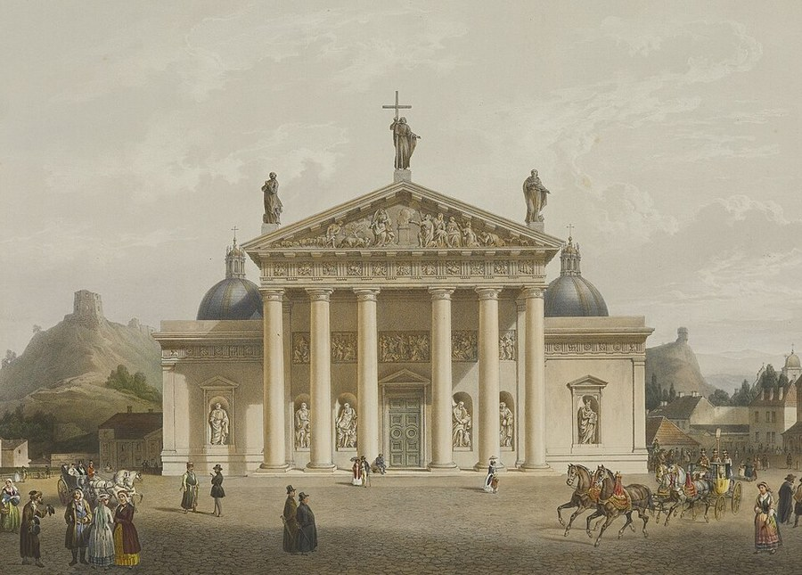

Šventaragis valley¶
In the 1380s [Historical record]¶
The valley is the flat ground at the Neris-Vilnia confluence below Gediminas hill, around today’s cathedral. The founding story (in the 16th-century Lithuanian chronicles) is that the prince Šventaragis was cremated here and a perpetual flame kept burning; later dukes were burned here too. That is legend, not contemporary record. What is recorded: the cathedral site shows layers of earlier brick buildings, perhaps Mindaugas’s 13th-century church and, some argue (the Kitkauskas hypothesis, contested), a pagan sanctuary phase. Algirdas died in 1377 and was cremated by pagan rite, and Kęstutis’s body was burned in Vilnius in 1382 (sources). In 1387 Jogaila, according to Długosz, extinguished the eternal fire, felled the sacred grove and killed the sacred snakes. A Gothic cathedral went up in 1387 and burned in 1419; Vytautas replaced it with a larger church. Sources: VLE; en.wikipedia (Vilnius Castle Complex).
Šventaragis valley

Šventaragis valley · place — Image: Unknown author, Public domain via Wikimedia Commons¶


Tipas |
vietovė |
Pastaba |
Sacred river valley at Vilnius; site of pagan ducal cremations and the perpetual flame. |
Sensory sketch¶
Before 1387: a grove of old oak and lime on level ground by two rivers, a stone altar blackened by smoke, the smell of burned fat, juniper and wax, the dry crackle of a fire never allowed to go out, and thin pipe-smoke in river mist. After 1387: stumps, churned earth, scaffolding, lime pits and brick kilns, ringing hammers, and a new bell. In winter the Neris carries black ice floes past the valley; in summer meadow and mosquitoes. The valley is quiet because the hill blocks the wind.
Sagoje¶
The holiest place in the realm. The Silent Pact was sworn here in 1345 (Vėlinės night, Book VI and Book V ch. 5), Eglė tended the flame, and Kęstutis’s pyre burned here in August 1382. The valley’s extinguishing in 1387, the end of Pact clause 1, begins the Unbinding. It is used in every book as a changing sign: the grove (1382), the stump field (1387), the cathedral (1390s), the cathedral crypt (Book V). The ember artifact (Paskutinė žarija) is made here, and the Last Flame survives only because Vytautas carries a spark away.
Getting there¶
It is inside Vilnius, a few minutes‘ walk from the Lower Castle and the confluence. From Trakai it is 28-32 km (half a day), from Krėva 90-105 km (two days), from Kernavė about 35 km up the Neris. The valley is the reference point for the saga’s road distances: to Palanga 350-400 km (eight to ten days), to Kraków 750-850 km, to Marienburg 550-650 km.
Scenes set here¶
Prologue (the grove, the prophecy night); Book I ch. 29 Krikštas (the extinguishing, February 1387); Book II ch. 3 Kas ugnį gesina (winter 1387-88); Book IV ch. 24, ch. 26-27 (recalled); Book V ch. 2 (funeral), ch. 5 Senieji balsai (1345), ch. 20 Katedros kripta; Book VI ch. 1 Gedimino laužas, ch. 4 Tylioji sutartis (1345), ch. 6, 8, 15, 23, 26, 29.
Ryšiai
Created: Paskutinė žarija (Šventaragis ember)
Events here: Baptism of Lithuania; Šventaragis flame put out · Silent Pact sworn
Chronologija¶
Year |
Event |
Book |
|---|---|---|
1345 |
VI · Šventasis Miškas (priešistorė) |
|
1387 |
I · Vilko Tremtis |
Sąsajos¶
graph LR
ember["Paskutinė žarija (Šventaragis ember)"]
ev_lithuania_baptism["Baptism of Lithuania; Šventaragis flame put out"]
ev_pact_sworn["Silent Pact sworn"]
sventaragis["Šventaragis valley"]
ember -->|Created by| sventaragis
ev_pact_sworn -->|Location| sventaragis
ev_lithuania_baptism -->|Location| sventaragis
style sventaragis stroke-width:3px